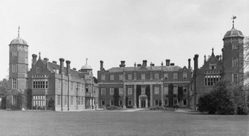

Fig. 1. Cobham Hall
The correspondence of Elizabeth Delaval’s half-brother, Charles Stuart, contain communications from her, from her sister and from her father-in-law during the 1660s and 1670s. Charles Stuart, who became Duke of Richmond and Lennox in 1660, was born in 1639 to George Stuart, seigneur d’Aubigny, and Lady Katherine Howard. His father died of wounds received at the battle of Edge Hill and his mother went on to marry James Livingston in 1648, give birth to Elizabeth in 1649, and die a royalist exile at the Hague in 1650.1 Through Charles Stuart, Elizabeth Livingston was transported to court. She and her half-sister, Charles Stuart’s full sister, Catherine O’Brien (later Williamson), wrote to him throughout the 1660s and he seems, too, to have been involved in the negotiations with the Delaval family over Elizabeth’s marriage. As Gary Schneider notes, civility instructed superiors to reply to the letters of inferiors, and the Charles-Elizabeth correspondence suggests layered imbalances of power – of gender, status, liberty – even as it is informal and familial.2
The period covered by the letters below was complex and turbulent for both the sender and the recipient. While Delaval was at Nocton, in Lincolnshire, with her aunt, then at court and then back at Nocton before being married in 1670 and moving to Seaton Delaval, Northumberland, in 1671, her brother made and broke a career at court. Having risen to power and favour through having joined Charles Stuart in exile and having acquired importance through the unexpected and, for him, fortuitous, death of titled relatives, in the 1660s he squandered a promising career as a courtier and politician. Various activities, including a duel, complicated his life at court but he ensured his fall from grace by wooing and then marrying Frances Teresa Stuart, ‘La Belle Stuart’, a relative of his and the King’s who the King strongly desired, and perhaps had as a mistress. Their marriage in March 1667 meant that they were exiled from court to the mansion the Duke had been given in 1666, in Kent. The Duke set about spending money on his house, visiting his lands in France and seeking a diplomatic appointment abroad. In this position of weakness, in 1671 he nevertheless involved himself in the murder of an officer of law in a violent, drunken aristocratic escapade. In February 1672 he got his wish, with the offer of an ambassadorial post to Denmark where he died after a fall into the icy harbour in December the same year.
The Duke of Richmond and Lennox connected Elizabeth Livingston to the aristocracy. It is evident from her letters to him that he had power and influence that she needed and, it seems, desired. During his exile from court, while he worked on Cobham Hall, Elizabeth Livingston sought his patronage and influence. Her letters mark interests and characteristics also noted by other correspondents: his interest in diversion; his unwillingness to pay and tendency to debt; his neglect of public duties. While some of her communications are more engaging than others, the letters suggest that although he was an infrequent and erratic correspondent, he did reply and to some extent took responsibility for his half-sister Elizabeth’s path through life.3 It may be that the letters she wrote during the early days of her marriage suggest a competition between her interests and those of the Delavals, with Sir Ralph Delaval, her father-in-law, apparently sometimes at her shoulder as she writes, pressing his concerns. The earlier letters from Nocton indicate the Duke’s importance in that world of women, where Lady Charles Stanhope controlled finances and possibilities and, it seems, she and Elizabeth pursued sometimes conflicting ends. The Delavals, or Sir Ralph, seems both wary of financial entanglement and keen to utilise connection. For Elizabeth, the Duke represented the possibility of ensuring a good organization of the marriage settlement – he is the trustee that needs to act for her. We know that in 1670 she was very concerned not to be married with her debts from court hanging over her, and we know that the king issued a warrant to pay her £2,000 as a ‘free gift’.4 The meditations, too, tell us of a struggle to have a legacy from her grandmother Lady Gorges allocated to pay off her debts rather than added to her dowry. The letters corroborate the indications in her manuscript that she was concerned about the financing of her marriage and her father’s apparent unwillingness to set her debts straight before the marriage.
Representing a sample of Delaval’s writing from the period discussed in her long manuscript, the letters offer an illuminating counterpoint to the memoirs and prayers. Unlike the long manuscript, these letters were written, sent and received; they were stored rather than ordered and have not undergone any of the processes that went into Delaval’s compiled manuscript. The letters show Delaval as a perennial suitor – for periwigs, the company of her cousin, timber. They apparently show her attempting to mediate between her husband’s family and her brother, both encouraging him to visit Seaton Delaval and, after he has finally visited, trying to ensure that her father-in-law receives payment for a horse he sold the Duke. The correspondence does contain letters from her half-sister, Catherine O’Brien.5 However, though Delaval’s letters share with her sister’s an attention to the mood and pleasure or displeasure of the recipient that indicates his power over them, hers are longer, apparently more frequent and more noticeably pursuing particular ends. These letters have been mined to some extent for aristocratic biography and to illuminate the romance of Charles II’s mistress, ‘La Belle Stuart’, but have not been set alongside her longer text.6
The letters are unredacted, but they are crafted. They give us a fairly carefully shaped persona. Throughout, Livingston and then Delaval is at pains to soothe, flatter and cajole her brother while at the same time very clearly pursuing her own ends. They chart her desires, from a light-coloured periwig (for theatricals, perhaps, or for her?) to the presence of her young cousin, and their rhetoric is built to solicit favourable response from a brother also in the position of a patron with little time or, the letters seem to anticipate, inclination to attend to her needs and desires. The Duke, or his agent, store the letters (including one which ends ‘I beg you will burn this long letter’, duly filed) and her correspondence indicates that he does write back, albeit rather irregularly. These letters, then, are a body of texts written during the Nocton and Delaval years, ending with her brother’s death in 1672. If much of our understanding of the young Delaval of the Rawlinson manuscript is shaped by a later directing voice, then these texts offer a contrastingly gradual set of changes in style and circumstance from relatively childish concerns to the letters of her first year at Seaton when she is concerned with summer trips (to Scarborough for her husband to visit the spa) and becomes an agent of Delaval family business in suggesting deals, seeking payment for horses. The rhetoric of the correspondence certainly shows both that she needed to manipulate others to achieve her ends and that she is energetic and persistent in working towards her goals.
Note on transcriptions:
Significant space is shown where possible.
Long lines after the address line are represented simply /.
Livingston / Delaval’s use of space fillers to end lines are not recorded.
Add MS 21947 fols. 14-1.5
Elizabeth Livingston to Charles Stuart, Duke of Richmond and Lennox
1 sheet 11.5” x 8” folded so that prepared page is 8” high, almost 6 across
F.14r. Endorsed ‘Sister Levingston Aprll 25 65’.
Nocton Aprill 247
Deare Brother8
I am now come home to my Aunt Stanhope who I find extream kind to me; onely a lettle angry still at my takeing notice of her graue surprised loke that night you came to Stanhope house: she says if I had not rated her for it before you: you would not have toke it ill: you cannot imagine how much she is afflicted she has given you reason to be displeased with [f. 14v] her, I am sure I heare of it every day: she is extreamly rejoiced at your marryage, and wishes you both (what I hope you are) the hapyest people in the world;9 now if you please; tis in your power to make my life much hapyer: by onely sending your servise to my Aunt in a letter to me; or saying any little thing of her; that may make her believe you are no longer angre; and indeed I thinke you have no reason; for she has realy a very great respect both for you, and my sister Richmond; and has done penance for one rach fault a great while by tormenting her selfe, with thinking she has quite lost your favour: which I humble beg for her again; and for my selfe your pardon that I have presumed thus long upon your patience; [f. 15r] pray let my sister Richmond know I am her most humble servant; and do you believe me
My Dearest Brother
/
Your affectionate sister
and humble servant
if you have ever
a very light coulered
Periwig that is not
your favourite, and
will send it to Stanhope
house to come to me E Levingstone
I shall take it for a
great favour:
Add MS 21947 fols 31r-32v.
Elizabeth Livingston to Charles Stuart, Duke of Richmond and Lennox
11.5” x 8” folded as before
Endorsed ‘Sister Livingston May 11 66’
Nocton May 11:
Deare Brother,
/
Tis now almost 3 weekes since I sent you a letter to Somerset house, which I should be very glad to hear wether you have received it or no, because if you have not, I must agen give you the trouble of one to the same effect: I have now got my Aunt [f. 31v] Stanhopes leave to come and wate upon you and my Sister Richmond at Cobham this summer, if my sister Catherine comes to you, as I hope she will, when my Lord O’Brion comes out of Ireland; I had a letter yesterday from thence in which my Cousen OBrion presents her humble servise to you, and wishes you a great deale of ioy.10 She sends me word for news that my Lord John Buchelleu [Buccleuch?] has with a fall against the edge of an chere broke the bridge of his nose and that tis thought it will ever be flat.
I beg you will present my humble – servise to my sister Richmond, and
[f. 32r] believe me ever11
Dear Brother
/
Your affectionate
sister and very
humble servant
E.Levingstone
 
Add MS 21948 fols 5r-6v.
Elizabeth Delaval to Charles Stuart, Duke of Richmond and Lennox
Jan ye 28: 1670 [1671]
Deare Brother,
/
I had writ sooner to you and returned you my humble thanks for all your kind favours when I was last in Towne, but that I thought I should more oblidge you by giving you the trouble of a dull country letter (which can never be short I find I find it so pleasing to converse this way way with you when another is denyed me) till I had something to fill it with that might devert you, which I did [f. 5v] hope a description of Boston might be wether Mr Delaval and I intend to go for a night or to next weeke. But since my Lady Anne writes me word you are expected to have herd from me before now, I will not stay till after than journey to tell you my Dearest Brother that this quarrel of yours being an effect of kindnesse is a great satisfaction to me for I am confident none can be more beloved by a sister than you are, and I hope you will easely be reconciled to me, since if you will give me leave often to write to you I promiss you shall never more be displeased at my silence: Mr Delaval is your humble servant and says he has [f. 6r] sent into the North to have 12 Coupell of Hounds ready for you at Seaton in Aprill; if you please to command them sooner, pray let us know it. My Aunt Stanhope is now extreame kind to me and very much your humble servant; I hope you have been so charitable as to visit my Mother agen, and that you will also speake for my brother Newburghs advantage in what he can expect to have out of Scotland, for without some considerable Friends I am sure he will be but in a miserable condition, since I feare my Mother dos not much consider those affairs, pray when you see her do me the justice to let her know how much I am concerned for my brother, that she may not believe [f. 6v]me such a person as some have taken the paines to represent me to her that is; one that wishes what may be to his disadvantage: by this time I believe I have tried your patience with this long letter which Deare Brother forgive and believe me ever
Your most affectionate
sister and faithfull
humble servant
E Delaval
Mr Delaval and I present our humble services to my sister Richmond so dos my Aunt Stanhope/.12
 
Add MS 21948 fols 22 r-v
Elizabeth Delaval to Charles Stuart, Duke of Richmond and Lennox
11.5 x 9.5 across written as one sheet
Feb 10 (1670) [1671]
Deare Brother
/
I have received your short letter which gave me reason to hope for a longer, since you said you have not ansered all in mine, but yet I find you have not been at leasure for that imployment; I should be very glad to hear I might see you before I go into the North, for as you are a trusty for me, and the nearest in relation I now have alive, I should very much reioyce to discourse with you of all my conserns (if ‘t were possible) before I see Sr Ralph Delaval agen;13 Mr Dl has promised to be at Seaton the twentyeth of March; therefore pray let me know if you have any thoughts of commanding me to mete you at Boston before that time were I have lately been and can tell you for your incouragement to come thether [f. 22v] that you will certainly find very good wine and Fish well dressed in that place, much more I cannot say in the commendations of it, except the seeing of a very famous steple may be a divertisment;14 Deare Brother let me hear from you, and be so kind as to resolve upon what will be an infinit satisfaction to
Your most affectionate sister
and humble servant
E Delaval
Mr Delaval is your
Humble servant and we both are my sister Richmonds
 
Add MS 21948 fols 70r-71v
Elizabeth Delaval to Charles Stuart, Duke of Richmond and Lennox
16” x 11.5 written both vertical and horizontal.
Seaton Delaval June [1671]
[f.71r]
Deare Brother
/
I know not wether this letter will come safe to your hands or no because you writ me word in your last you were going to Winsor, but Sr Ralph persuades me it will; I am extream glad to heare you intend to be heare this summer, for then amongst other things I have to say to you I must beg a way of oblidgeing me, and my little Cousen Sidley without displeaseing my Aunt Stanhope, the truth is that the Girle above all things desiers to live at London but that as her Father has reason, he refuses her; next to that she desiers to be my charge agen above all things; and I love her so well [f. 70v] that I would willingly have her here, Nocton being but a dull place to her now she has not the company of any young lady; and Sr Ralph tells me her Father was very well pleased with the thoughts of her being here with me, but you know [scratching out] it would be so ill a thing of me to displease my Aunt Stanhope that I never dare mention the robing her of my Cousen Sidley, but since she her selfe desiers so much to leave her, perhaps you may perswad Sr Charles to write to me to take her, and he may well enough remove her telling my Aunt Stanhope how malancoly my Cosen finds her selfe at Nocton without the company of any people nere her age; which she will mete with here my Lady Anne having severall Daughters: pray Deare Brother have a care how you speake of this buinesse, and do not take notice that I writ to you about it; if it comes to pass as I wish it may I will bring my cosen home with me this summer for Mr Delaval and I intend my Aunt Stanhope a visit when she comes home, [f. 70r] therefore pray let me know when you intend to be here that I may be sure to be at home at that time, for we intend many rambles part of this summer, to be at Scarborough Waters if Doctor Wise advises Mr Delaval to it for his Asmah, and if my sister Caterin come down to Billing we intend to see her also; I beg you will burn this long letter and forgive me who am
Deare Brother
Mr Delaval is your Your affectionate sister
humble servant and humble servant
E Delaval
 
Add MS 21948 fols. 74r-75v
Elizabeth Delaval to Charles Stuart, Duke of Richmond and Lennox
12” x 15.5” across
To brother at his town house, Bowling Green, Whitehall Palace, London
Scarborough July ye 13th [1671]
Deare Brother,
/
I have this day received yours of the 8th of this month, with very great satisfaction since you give me hopes of seeing you at Seaton, we shall stay here yet about 15 dayes and then we intend to go to Nocton where I will make but a very short stay rather than lose the hapynesse of your company upon the 24 day of August if it please God to blese me I will be at Seaton agen, which I supposs will be much about the time the King will return from Porthmouth that you may have the DukeYake, [but if] and a good time to come into Northumberland since most of the company in it will then be at Newcastell the Sizes [assizes] being kept in the later end of August, and then all the settlements of our estate are to be perfected, in which afaiers I shall beg your assistance; having many more things to say then I will now give you trouble of in a letter for [f. 74v] I am sure you will be more at leasure toconsider my concerns, when you are in the contry then you can be now you are at Court, But if it will be more convenient for you to be at Seaton sooner then the 24 of August pray let me know it and I will leave my Aunt Stanhope as many dayes sooner as you de…. I should, being ever ready to obey you, if you do not anser this letter I shall conclude you like the time that I have chose to be at Seaton, and not faile to be there against that day who am
Deare Brother
Your most affectionate
sister and humble servant
Mr Delaval
is your humble
servant we both are my
sister Richmonds E Delaval
 
Add. MS 21948 fols 101r-102v.
Elizabeth Delaval to Charles Stuart, Duke of Richmond and Lennox
12” x 9” across made of 1 sheet 15.5 “ x 12”
[f. 101r]
October ye first [1671]
Deare Brother
/
I have received your commands about your horses which shall very suddenly be obeyed, for I have a stable that is very warme for them at my Farme house where either Mr Delaval or I go every day, and where we hope to live as soon as that place is finished, and when your horses are there they will be an ocation of my visiting that place the oftener, for I shall allwayes be much conserned for any thing of yours, especially what you put under my care; Sr Ralph sayes they are worth aboue 4 score poun a peece, so since he presented you with one of them, and that the other is not yet payed for, I presumed to write Sr Charles Bickerstaffe word [f. 101v] I was confident you would not be displeased if he accepted a Bill of 3 that Sr Ralph desiered him to pay for him in Scotland upon your account, which he refused to do, but payed it upon his own account, and immediately returned another to Sr Ralph to pay it to his Brother who is now placed at Tinmouth Castle with a company of Foot. I know not wether my letter will incline Sr Charles Bickerstaffe to accept this Bill upon your account or no, but having herd Sr Ralph often say that you promised him the mony for the Horse should be return[ed] him out of Scotland, I thought I might ventur to write what I did, especially since I hear Sr Charles Bickerstaffe thrives so well in the imployment you have put him in so that if had not mony of yours by him, he might very well upon your score lay downe a far greater sum: I hope it is but the feares of those who wish you well that tell me you will lose above ten thousand pound by not being in Scotland your selfe this winter. [f. 102r] but there are so few men honest in great trusts, that I cannot but tell you what I hear; about some 2 or 3 dayes ago I met with a youth who belonged to the Speedwell, and having been put into a price [prize] ship that was retaken he was afterwards set a shore by the Dutch he told me that he was in the worst price [prize] and there was to or 3 more taken in one of which there was 40 or 50 tune of Oake timber, if it be true pray when you write to Sr Charles Bickerstaffe order him to let me have some of it, and when I have the happynesse to see you, I will be very iust and recon with you for it. My Lord Loderdale is now come out of Scotland which is all the news that this part of the world affords, where next faring I hope you will be so kind as to see
Deare Brother
Your affectionate
Sister and humble
Servant E Delaval
[f. 102v]
SrRalph my Lady
Ann and Mr Delaval
present there
humble services
to you/
[Endorsed 12 Oct]
Add. MS 21948 fols 136r-137v
Elizabeth Delaval to Charles Stuart, Duke of Richmond and Lennox
8” x 62 from single sheet 8” x 12”
Seaton Delaval Nov yhe 23 [1671]
Deare Brother\
/
By the last post I had the satisfaction to receive a letter from you with the inclosed for Sir Charles Bickerstaffe which I gave to Sr Ralph Delaval (who is your humble servant) if you please to write about the Timber that I may have some about February will be as soon as I shall have use for it; Sr Ralph writ to you to desire you would [f 136 v] make a proposition to [Guilden Law] to send him into this harbour a ship loaden with Norway Timber bought there at the cheapest rates and he would trafick with him if he pleased, either store him with good English Horses, fine Breeding Mares, or salt or cole. I fancy either you have not received this letter, or elce you could not well understand what he ment his hand being very difficult to read, but if this businesse can be done for him pray do it, which will be an obligation to
Deare Brother
[f. 137r]
Your most affectionate
sister and humble
servant
E Delaval
Mr Delaval
is your humble
servant
[f.137 v]
[endorsed] Madam Delaval’s Novemb 23
Received Decemb 16
 
- See entries for James Livingston, Charles Stuart, and Katherine Stuart in Oxford Dictionary of National Biography (Oxford: Oxford University Press, 2004).
- Gary Schneider, The Culture of Epistolarity Vernacular Letters and Letter Writing in Early Modern England (Newark: University of Delaware Press, 2005), pp. 58-9.
- For example, a list of ‘Letters sent to severall Persons on Saturday the 22 th of June 72’ includes many to Joseph Williamson and a list featuring many of those who loomed large in the life of his sister Elizabeth: ‘Sister OBrien / . . ./Sr Ralph Delavall /My Lady Eliz Delavall’ Add MS. 21948 fols. 343r-344v .
- 1670, ‘Warrant to pay Lady Elizabeth Delaval 2,000l. as the King’s free gift’, Charles II CSPD 1670; See Douglas G. Greene, The Meditations of Lady Elizabeth Delaval (Gateshead: Northumberland Press for the Surtees Society, 1978), ‘Introduction’ p. 12.
- For letters from Catherine O’Brien see e.g.: Add MS 21948 fols. 26r-v; 198r-199v; 232r-233v; 254r-255v. Ralph Delaval also writes (e.g. fol. 64 r-v) with a hand every bit as difficult as Delaval suggests.
- Cyril Hartmann Hughes quotes one of the O’Brien letters, claiming that it indicates the Duke of Lennox’s alcoholism. However, it is clear when O’Brien writes to her brother ‘I writ on my last to let you know I have Uskibath redy for you when ever you will command sum: as if you stay all winter it will be very hollsom in that cold place’ (Add MS 21948 fol. 254r), that she is solicitous of his health in the Copenhagen cold which, in August 1672, she anticipates as he travels there. Cyril Hughes Hartmann, La Belle Stuart (London, Routledge, 1924), p. 200.
- Nocton in Lincolnshire was where Elizabeth Livingston lived with her paternal aunt, Lady Charles Stanhope. She left Nocton for visits (it seems to her grandmother and to London) and when she was at court, apparently leaving finally on her marriage in 1670. Although the letter is endorsed as 1665 the contents suggest that this may be an error because, although Lennox married three times, he did not wed anyone in 1665.
- Charles Stuart, Duke of Richmond and Lennox, was Elizabeth Livingston’s half-brother. Biographical material throughout follows John Callow, ‘Stuart, Charles, sixth duke of Lennox and third duke of Richmond (1639–1672)’, Oxford Dictionary of National Biography, online edn, Oct 2009 [http://www.oxforddnb.com/view/article/26696, accessed 10 Sept 2014]
- The letter is endorsed as 1665 but given the contents this may be an error. If it is a recent marriage, as it appears to be, the most likely occasion for congratulations in April is on Richmond and Lennox’s second marriage, on 31 March 1662. Richmond married Margaret (d. 1666/7), widow of William Lewis of Bletchington, Oxfordshire, and daughter of Lawrence Banaster of Papenham, Buckinghamshire. See ODNB.
- Charles Stuart became baron of Cobham on 28 May 1666.
- Probably Charles Stuart’s second wife, Margaret, widow of William Lewis of Bletchington, Oxfordshire who he married on 31 March 1662.
- This sister ‘Richmond’ is Frances Teresa Stuart (1647-1702). Charles Stuart’s second wife died in late December or early January 1666/7. See ODNB.
- Delaval’s father, James Livingston of Kinnaird, first earl of Newburgh (1621/2–1670) had died on 4 December 1670 and was buried at St. Margaret’s, Westminster.
- Boston stump at St. Botolph’s church, Boston, Lincolnshire.